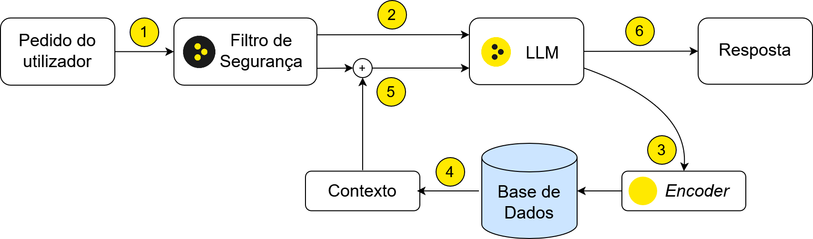

Construir Aplicações RAG#
Retrieval Augmented Generation (RAG) é uma técnica usada para melhorar as respostas dadas por um LLM com recurso a informação guardada externamente. Desta forma, o modelo poderá responder de forma mais precisa e com informação factual em domínios específicos recorrendo a bases de dados de documentos selecionados.
Um fluxo comum de RAG está representado no diagrama abaixo. Primeiramente, o pedido do utilizador poderá passar por um filtro de segurança para garantir que a restante aplicação fica protegida (1). Depois, o LLM começará por extrair termos de pesquisa relevantes a partir da mensagem do utilizador (2). Estes termos serão passados por encoder que possibilitará realizar uma pesquisa semântica numa base de dados (3) de onde se obtêm um conjunto de documentos potencialmente relevantes para responder ao utilizador (4). Estes documentos são introduzidos no contexto do modelo (5) para a resposta final ser gerada com as devidas citações (6).
{kind=link}

Indexação e Pesquisa de Documentos#
Para garantir que os documentos obtidos para o RAG são relevantes para o utilizador, a pesquisa na base de dados deverá ter uma componente semântica e não deve basear-se apenas nos termos usados. Por este motivo, é recomendada a utilização de uma base de dados que permita esta funcionalidade, como é o caso do OpenSearch.
De forma a tirar partido de pesquisa semântica, é necessário gerar vetores de embeddings semânticos para cada documento. Para isto, é usado um encoder, que será um modelo do tipo SentenceTransformers. Existe uma variedade de modelos multilingues deste tipo publicamente disponíveis, tais como o Qwen3-Embedding-0.6B, o BGE-M3 ou o nomic-embed-text-v1.5. Estes podem ser usados como no exemplo:
from sentence_transformers import SentenceTransformer
docs = ["A capital de Portugal é Lisboa.","A capital de Espanha é Madrid."]
model = SentenceTransformer("Qwen/Qwen3-Embedding-0.6B")
embeddings = model.encode(docs)
A biblioteca opensearchpy de Python pode ser usada para conectar a uma
base de dados OpenSearch e interagir com os seus índices da forma:
from opensearchpy import OpenSearch
client = OpenSearch(
hosts = [{'host': host, 'port': port}],
http_compress = True,
http_auth = (user, password),
use_ssl = True,
url_prefix = 'prefix',
verify_certs = False,
ssl_assert_hostname = False,
ssl_show_warn = False
)
index_name = 'data_index'
client.indices.open(index = index_name)
Para criar um índice no OpenSearch, é necessário fornecer a estrutura dos dados a ser guardados. Para além do texto dos documentos e os vetores de embeddings calculados, outros metadados relevantes podem ser incluídos, tais como os títulos dos documentos ou um URL para a sua fonte, que poderão ser úteis de incluir na resposta final apresentada ao utilizador.
Cada um dos campos de dados deve ser declarado no mapeamento do índice a criar com o tipo correspondente. A documentação do OpenSearch explica cada tipo em detalhe. Um exemplo simples de criação de um índice é o seguinte:
index_body = {
"settings":{
"index":{
"number_of_replicas":0,
"number_of_shards":4,
"refresh_interval":"-1",
"knn":"true"
}
},
"mappings":{
"dynamic": "true",
"properties":{
"id":{
"type":"keyword"
},
"title":{
"type":"text",
"analyzer":"standard",
"similarity":"BM25"
},
"url":{
"type":"keyword"
},
"text":{
"type":"text",
"analyzer":"standard",
"similarity":"BM25"
},
"embeddings":{
"type":"knn_vector",
"dimension": 768,
"method":{
"name":"hnsw",
"space_type":"cosinesimil",
"engine":"faiss",
"parameters":{
"ef_construction":256,
"m":48
}
}
}
}
}
}
client.indices.create(index_name, body=index_body)
Para popular o índice, os dados deverão ter um formato JSON compatível com
o índice criado. Esta operação pode ser feita em bulk, para indexar
vários documentos de uma vez. O exemplo abaixo mostra como enviar os
documentos para o OpenSearch em conjuntos de 500, tendo estes sido
previamente processados e formatados em documents.
action={
"index": {
"_index": index_name
}
}
def payload_constructor(data, start_id, action):
action_string = json.dumps(action) + "\n"
payload_string=""
for i in range(start_id,start_id+500):
if i==data.num_rows:
break
datum = data[i]
payload_string += action_string
this_line = json.dumps(datum) + "\n"
payload_string += this_line
return payload_string
for j in range(0, documents.num_rows, 500):
response=client.bulk(body=payload_constructor(documents,j,action),index=index_name)
print(j, " Errors:", response['errors'])
Após finalizar a indexação dos documentos na base de dados, poderão então ser realizadas pesquisas
semânticas com recurso ao mesmo modelo SentenceTransformers. O seguinte exemplo
mostra como fazer uma destas pesquisas após calcular externamente os embeddings de uma
query de pesquisa:
query_emb = model.encode(query)
query_body={
"size": 5,
"_source": ["title", "id", "text", "url"],
"query": {
"knn": {
"embeddings": {
"vector": query_emb.tolist(),
"k": 2,
}
}
}
}
response = client.search(
body = query_body,
index = index_name
)
Alternativamente, o modelo SentenceTransformers poderá ser registado no OpenSearch para possibilitar pesquisas semânticas sem necessitar de calcular embeddings externamente. A documentação explica como fazer este registo. Neste caso, a pesquisa pode ser feita da forma:
query_body={
"size": 5,
'_source': ['title','id','text','url'],
"query": {
"neural": {
"embeddings": {
"query_text": query_str,
"model_id": model_id,
"k": 2
}
}
}
}
response = client.search(
body = query_body,
index = index_name
)
Implementação do Fluxo de RAG#
Tendo a base de dados para RAG disponível, é possível definir uma sequência de prompts a enviar ao AMALIA a partir da mensagem do utilizador. Sendo que este fluxo poderá ter passos diferentes dependendo do caso de uso, esta secção descreve uma implementação simples para ilustração.
O primeiro passo poderá passar por detetar se é necessária uma pesquisa
na base de dados para responder ao utilizador. Para tal, pode ser criada
uma prompt para o AMALIA com esta questão e a mensagem original,
junto com um conjunto de regras e exemplos de situações em que deverá ou
não ser feita pesquisa. Um exemplo genérico é:
Com base na seguinte frase: "{mensagem}"
Devemos fazer uma pesquisa na base de dados? Só podes responder com sim ou não.
Situações em que deves fazer pesquisa:
- Tens informação limitada ou incerta sobre o assunto
- Precisas de informação factual atualizada
- Tens dúvidas sobre a exatidão da tua informação
- A pergunta requer exatidão ou detalhes específicos
<...>
Situações em que não deves fazer pesquisa:
- Discussões gerais ou opiniões pessoais
- Cumprimentos ou despedidas
- Conversas informais que não requerem informação factual
<...>
EXEMPLOS:
Pergunta: "Quem é <pessoa específica>?" → Sim
Pergunta: "O que é <assunto específico>?" → Sim
Pergunta: "Como estás?" → Não
Pergunta: "Olá bom dia!" → Não
<...>
A tua resposta [Sim/Não]:
De seguida, caso a resposta anterior seja afirmativa, poder-se-á pedir
ao AMALIA para extrair os termos essenciais da mensagem original e
aplicar formatações necessárias para melhorar os resultados da pesquisa.
Genericamente, esta prompt poderá ter a forma:
Com base na pergunta do utilizador, gera uma query de pesquisa para a base de dados.
Pergunta: "{mensagem}"
Regras para criar a query:
- Mantém apenas os termos essenciais
- Escreve em minúsculas exceto nomes próprios
- Não uses aspas ou caracteres especiais
<...>
EXEMPLOS:
Pergunta: "Quem é <pessoa específica>?" → Query: "<pessoa específica>"
Pergunta: "O que é <assunto específico>?" → Query: "<assunto específico>"
<...>
Responde apenas completando a próxima frase.
Query de pesquisa:
Após realizar a pesquisa com a query na base de dados e obter um conjunto de
documentos relevantes e as suas fontes, estes poderão ser então
adicionados ao contexto da prompt final ao AMALIA para responder à
mensagem original. Um exemplo genérico é:
Encontrámos <n> resultados para a pesquisa: {query}
Aqui estão os resultados:
<primeiro documento e fonte>
<segundo documento e fonte>
<...>
Com base nesta informação responde ao pedido do utilizador com os dados
relevantes, citando as fontes necessárias: {user_message}
No final, o utilizador obterá uma resposta correta, detalhada, e devidamente citada, conforme os documentos indexados na base de dados.
Segurança#
Em diversas aplicações, será útil garantir que os pedidos dos utilizadores respeitam normas de segurança antes de realizar qualquer processamento.
Para este propósito, foi desenvolvido o modelo de salvaguardas AMALIA, disponível no HuggingFace. Este modelo poderá atuar ao nível dos pedidos dos utilizadores, filtrando pedidos perigosos que devem ser barrados de imediato, protegendo assim o bom funcionamento do sistema informático.
Com esta salvaguarda, o fluxo da aplicação poderá ser adaptado para devolver respostas padrão seguras quando os pedidos não são seguros.